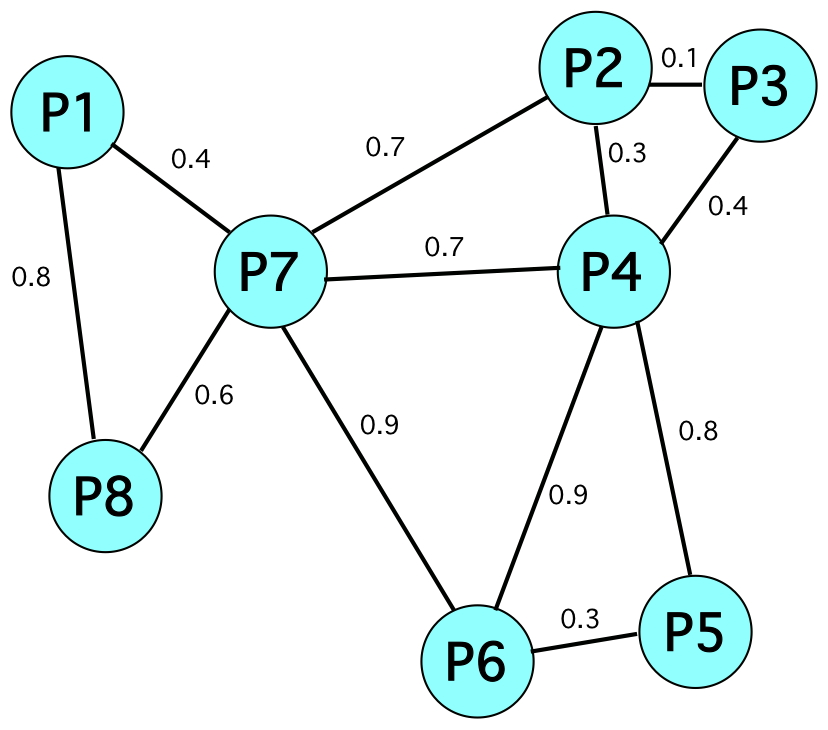

Sets of Proofs

Maximal Jaccard Distance
Generalized Clustering Coefficient
- Variant of the
original GCC
- Weighted graph
- Artifact sets as nodes
- Jaccard similarity as edge weights
- Triplets, jaw edges and closing edge
- Compute extent of clustering, Csw =
∑ (avg_jaw_weight × closing_weight)
------------------------------
∑ avg_jaw_weight
- Lower Csw ≡ greater proof diversity
- Examples
- P1-P7-P8 = 0.58
- P2-P3-P4 = 0.26
- Set of same proofs = 1.00
- Set of completely different proofs = 0.00